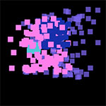
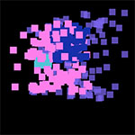

Particle System
https://github.com/pokepetter/ursina/blob/master/samples/particle_system.py

import numpy as np
number_of_particles = 1 0 0 0 # keep this as low as possible
points = np.array([Vec3(0 ,0 ,0 ) for i in range (number_of_particles)])
directions = np.array([Vec3(random.random()-.5 ,random.random()-.5 ,random.random()-.5 )*.0 5 for i in range (number_of_particles)])
frames = []
# simulate the particles once and cache the positions in a list.
for i in range (6 0 *1 ):
points += directions
frames.append(copy(points))
class ParticleSystem(Entity ):
def __init__(self, **kwargs):
super().__init__(model =Mesh(vertices =points, mode ='point' , static=False, render_points_in_3 d=True, thickness =.1 ), t=0 , duration=1 , **kwargs)
for key, value in kwargs.items():
setattr (self, key, value)
def update(self):
self.t += time.dt
if self.t >= self.duration:
destroy(self)
return
self.model.vertices = frames[floor(self.t * 6 0 )]
self.model.generate()
if __name__ == '__main__' :
app = Ursina(vsync=False)
window.color = color.black
def input(key):
if key == 'space' :
p = ParticleSystem(position =Vec3(random.random(),random.random(),random.random())*2 , color =color.random_color(), rotation_y =random.random()*3 6 0 )
p.fade_out(duration=.2 , delay =1 -.2 , curve =curve.linear)
Text('press space to spawn particles' , origin =(0 ,0 ), y =-.4 5 )
EditorCamera()
app.run()
